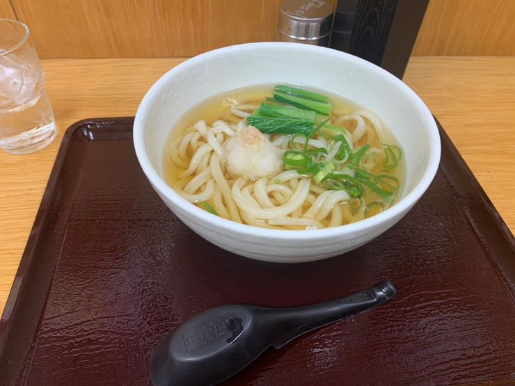
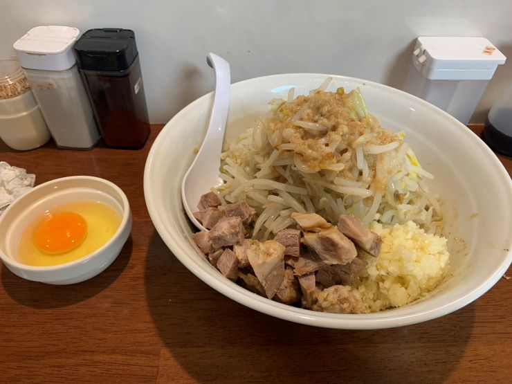

メモ
手順
姿勢とか
- ハンドルをいったん一番奥にずらす
- お尻と背中を座席に押し込む
- 座席上下の二つは一番上にしておく
- リクライニングは 90度に 見えるようにしておく。本当は 105度になるように、とかなんとか
- ブレーキペダルを踏みきっても足が伸びきらない位置まで、座席を前に出す
- ハンドル頂上に手を伸ばしたときに、第一関節に乗る位置までハンドルを手前に出す
- シートベルト
その他メモ
- イグニッション前にはメインスイッチを引っ張って ON にする
- 逆に、エンジン停止後はメインスイッチを OFF にする (左にひねりながら押す)
ヤバい
エアブレーキ
一番慣れない。
最初効いていないように感じて、あとからがっくんとなる。
一説によると、まずはある程度踏んで、そのあとじわじわ戻していくのが良いとか。
教官に、仕組みを聞いておきたい。遊びが大きいだけなのか、効くまでに遅延があるのか。
直線後のカーブ手前で、毎回減速の練習をするべき。そのためにも、直線では速度を上げる。
フィンガーシフト
2秒くらい押しっぱにしないと入らない。すぐ忘れる。
クラッチペダル
思ったより手前でつながった。
次回は、座席をあんまり近づけすぎないようにする。
車幅感覚
対向車線にはみ出しまくって良い。対向車に注意。
内輪差
はみ出しまくってから曲がるイメージ。
後輪は、サイドミラーで見える反射板の、さらに奥にある。都度確認。
約三ヶ月ぶりに訪問。長かったぜ。
事務関連
入所手続き、説明(続き)
主に、前回説明が終わらなかった、予約当日の受付方法やキャンセル待ちの方法などを聞いた。
押さえてもらった教習スケジュールの確認
学科はがーっとなるべく少ない日数で、技能はほとんどの土日それぞれ 1, 2コマずつ、9月まで埋まっているって感じだった。大変だ。
免許取得関連のルールを質問
入所してから卒業するまでの間に、(別途免許センターで一発試験を受けるなどして) 所持免許が増えても問題ないか、について念のため確認した。
最初、軽い感じで「問題ないですよ」と回答してもらったが、「教育訓練給付制度の絡みもあるので、ちゃんと確認をお願いします」って言ってまた偉い人に確認してもらった結果、ダメだとのこと。
- 入所後だとしても、所持免許に合わせたカリキュラム変更を行う必要がある
- 別の二種免許を持っていれば二種学科が免除になる、など
- 多く受ける分には問題ないかと思ったが、そうでは無い
その結果、教育訓練給付制度で申し込んでいた指定講座では無くなってしまうので、大型特殊二種を受けるのは卒業後とすることにした。
(偉い人、副所長さんが何人か居るみたいなんだけど、前回の人とは違って大分感じの悪い人だった……)
ランチ
ランチマップ見て一番気になった近めのうどん屋は日曜日定休、しょうが無いから最寄りのファミレスかなと思ったらまだお昼前なのに長蛇の列、って事で少し歩くけど安そうなうどん屋さんに向かった。
四ツ木製麺所 | 食べログ
お店の名前も看板もうどん屋さんなのに、いざ入ったら中身は居酒屋でビビった。
近所のおじいちゃん達が酒飲んでたし、最初に「お酒ですか、食事ですか」って聞かれたし。
そしてメニューや注文が QR コード経由の Web システムでなおビビった。
うどんは結構美味しかったです。

教習
スマホとかをいじらずに人の話を一時間聞く、という体験が久しぶりなので、果たして耐えられるのかが不安だったのだが、そもそもそのような状況にはまだなっていない。
適性試験
パソコンでシミュレーションとか記憶力クイズとかやった。テンキーだけしか使わないようになっている。
結果は今度貼る。
- 「事情があるときは駐車禁止もやむを得ない。 1.はい 2.どちらかと言えばはい 3.どちらかと言えばいいえ 4.いいえ」みたいな質問に答えて、自分の性格を分析してくれるやつ
- 等速で動く物体が建物の陰に隠れたあと、建物の反対側から飛び出すタイミングを予測してボタンを押すやつ
- 画面に映った写真を10秒くらいで覚えて、そのあと「交差点の信号はどうでしたか。 1.青 2.赤 3.信号は無かった 4.覚えていない」みたいな質問にいくつか答えるやつ
25分くらいで終わった。って言うか、結果を見てのフィードバックは別のコマなのね。
学科 先行1
教官とサシ。流石にいろいろ会話が発生するので、飽きずに終わった。
項目1: 第二種免許の意義
意味とか理由とか実態とか求められる資質とか。あんまり教科書通りにはやらなかった。
以下が印象的だった。
- バスやタクシーの運転手は天候を選べないので大変
- 代行運転自動車標識は、客の車に貼る必要があるが、ほとんど守られていない
学科 7
ファンキーなおじいちゃん教官。教科書は嘘ばっかだからって言って、ずっと別の話していた。
生徒は三人いたが、めっちゃアンケートとか質問とかしてくるので飽きずに終わった。
項目17: 身体障害者などへの対応
最初に、中でやるか外でやるかどっちが良いかを聞かれた。いや、こっちは何をするのか知らないし、中と外の違いも分からないので、答えられません。。。
授業を聞いていて、車椅子な人くらいなら想像出来ていたんだけど(それも覚悟は足りなかったことが分かったが)、聴覚や視覚が不自由な人とかもそれぞれ適した対応が必要で、正直自分にはバスやタクシーの運転手は無理だな、と思ってしまった。
あと、介助方法に答えは無い、というか人ごと・日ごとに違うから、何を手伝ったら良いのか毎回その人に確認することが一番大事とのこと。
そういえば、クレーン学校が併設されているからって、吊り角のことを教えてもらった。
例えば、荷物が重いから二人で持とうってときに、横に並んで斜め 120度 とかから引っ張ると荷重が倍になり、二人で分散する意味がなくなるって話が面白かった。
ただ、車椅子の実習やるっぽいこと言っていたのに、結局やらなかったのでちょっとしょんぼり。
夜飯
陽はまたのぼるとからーめんしょっぷ中吉とかに寄って帰ろうかなと思っていたが、教習終わったのが 16:00 と中途半端な時間だったので、どちらも営業しておらず。
結果、なつかしのラーメンむねや に行ってみた。移転後に一回行った程度だから、八年ぶりくらいか？

もちもちした極太麺と不思議なおいしさのタレ・アブラ。相変わらず美味しかったです。
入所手続き、説明
料金の振込も済んだので、入所手続きしてきた。(これが初訪問)
が、エラい時間掛かってしまい、半分も終わらなかった。事前の電話では「手続きに一時間くらい掛かるので、閉所の一時間半前くらいまでにお越しください。」とのことだったので、二時間前には訪れていたのだが。
主に、教育訓練給付制度関連の書類が増えていることと、署名を求められたいくつかの書類がいまいちしょぼくて質問しまくったことが原因かな。受付のお姉さんには悪いことをした。あと、偉い人も何回か登場してもらったので、それも申し訳なかった。
教習の予約
混んでて予約が取りづらいというのは事前に聞いていたが、話を聞いた結果、当初の予想より数倍は取りづらいと言うことが判明した。って言うか、「予約は六月まで埋まっています」と「現在予約を受け付けているのは六月分までで、でもすでに埋まっています」じゃ、ニュアンス大分違うと思うんだが……
とりあえず、七月以降の予約を受付次第、良い感じに予約を取ってくれるらしいので、いったん全土日全時間帯 OK で取ってもらって様子を見ることにした。最初は他の予定との兼ね合いとか考えて、土曜日は午前中だけかなとかいろいろ考えていたのだが、期限(教習全体で九ヶ月、仮免で六ヶ月) の心配もあるのでまずは全力で突き進む形を選んだ。
(これ、都度予約のプランの人はいち予約ごとに二、三ヶ月待つって事？期限内に終わらせるの、無理じゃね？)